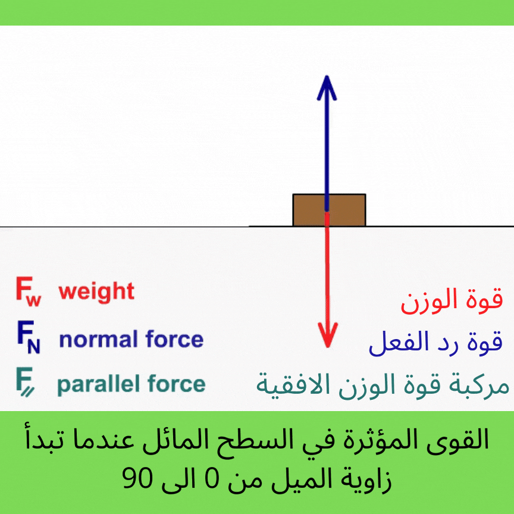

السؤال الأول: اي الاجسام التي تنزلق على السطح المائل تسارعها هو الاكبر وايها هو الاقل حيث الاجسام جميعها نفس الكتلة
السؤال الثاني: استنتج تأثر زاوية الميل في التسارع على السطح المائل

السؤال الثالث: ماذا يحدث للقوى كلما زاد ميلان السطح؟
السؤال الرابع:ما هي القوى التي تتساوى مع //F في حال وصلت زاوية الميل الى 90